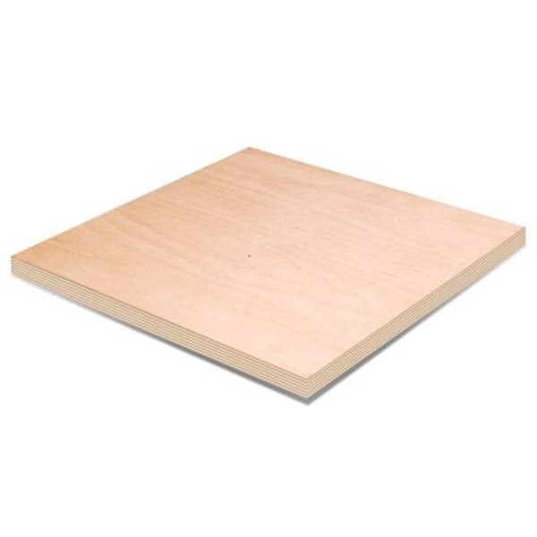
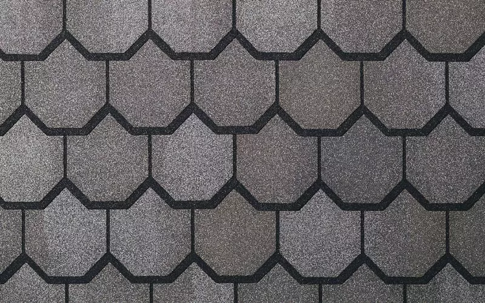

- Фанера ФК 
Березовой фанерой считается фанера, внешние слои которой изготовлены из березового шпона (внутренние при этом могут быть как лиственными, так и хвойными). Этот вид получил достаточно широкое распространение, чему способствовали три обстоятельства: Береза является гораздо более распространенным деревом, нежели другие лиственные породы; Березовые стволы редко бывают пригодными для производства качественной доски или бруса; Березовый шпон отличается высокой прочностью, небольшой плотностью и очень красивой текстурой, что делает пригодным этот сорт в том числе и в мебельном производстве;
- Мягкая кровля 
Преимущества металлочерепицы простота монтажа; разнообразие цветовой палитры; доступная цена; прочность; большой срок эксплуатации. Наши изделия уложенные с соблюдением всех технологических правил монтажа прослужат вам долгие годы! С Строитель 2005 ваша крыша в надежных руках!